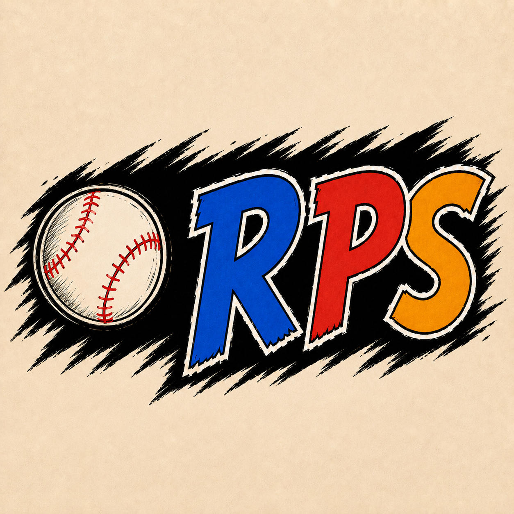

01 / Systems
Connected by design
Survival, evolution, and progression come together to make a world worth exploring.
Soft Bulb Studios / Independent games
We make games where choices reshape the world and surprising stories emerge from the simulation.

God game · Evolution sandbox
Be a god to the Jilongs. Shape their DNA, guide their settlement, and discover how your choices ripple through a living world.

Baseball · Cards · Rock-paper-scissors
A strategic baseball card game where rock-paper-scissors matchups, changing winds, and player traits shape every at-bat.
Inside the studio
We build around interacting systems: the choices you make, the consequences that follow, and the unexpected moments in between.
01 / Systems
Survival, evolution, and progression come together to make a world worth exploring.
02 / Choice
Experiment, discover, and watch your actions change the simulation.
03 / Craft
Clear feedback helps players understand a complex world while finding their own way through it.
For questions, feedback, and studio inquiries.
games@softbulb.io